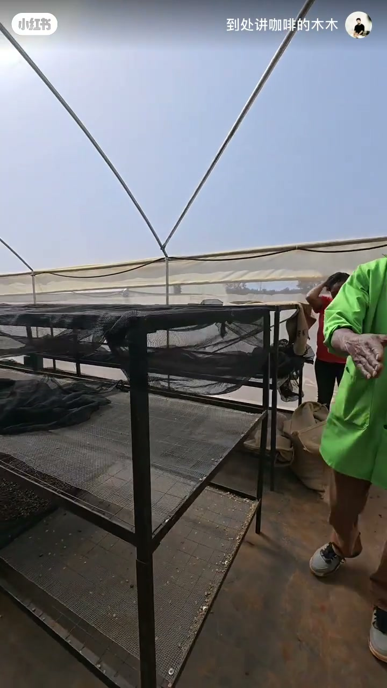
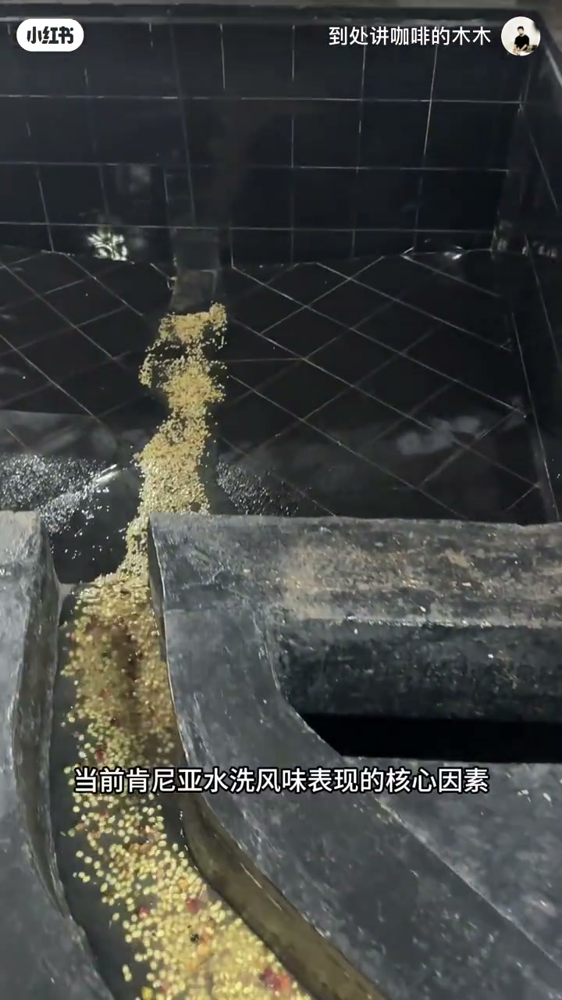
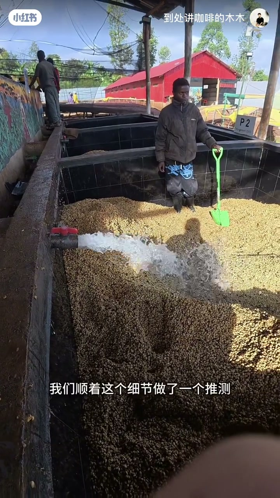
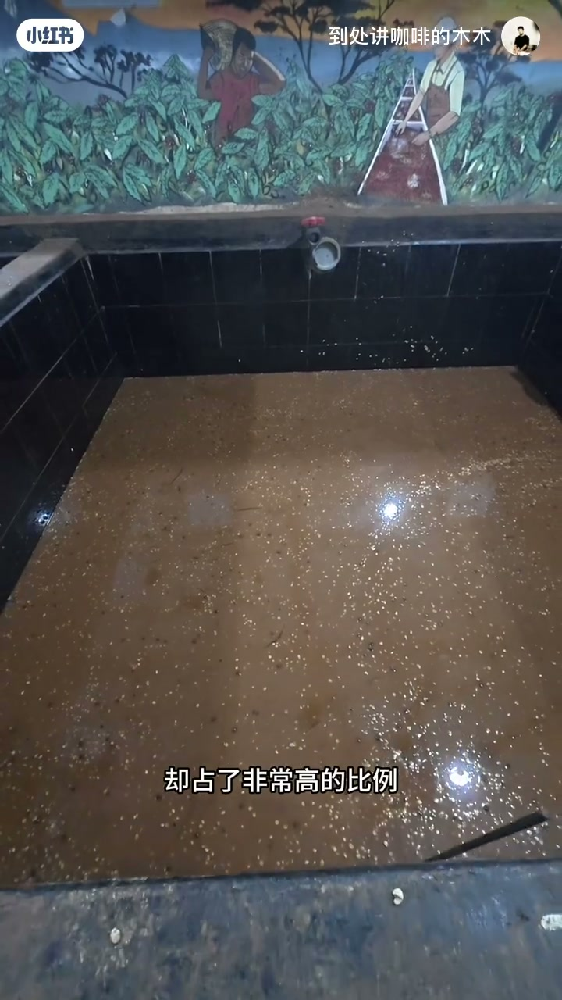
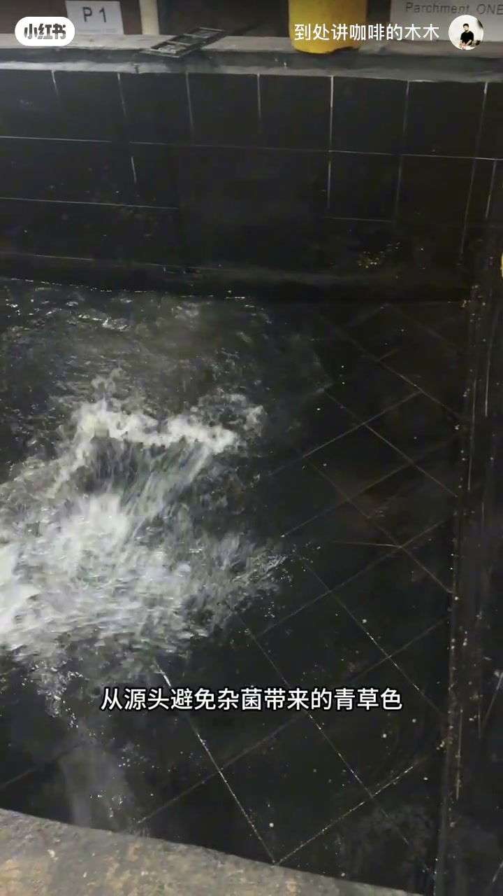
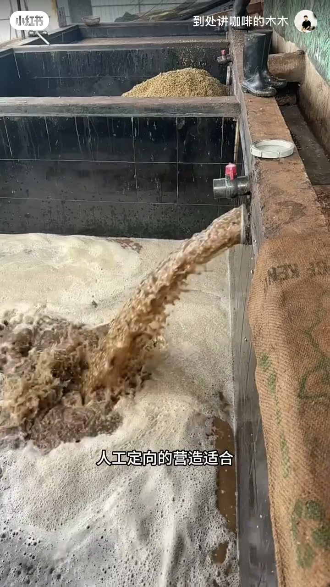
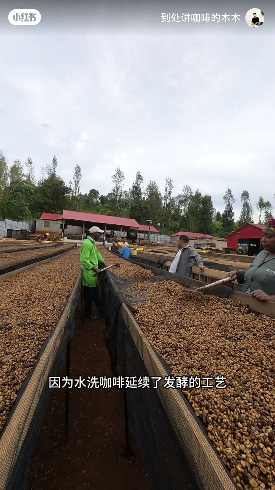
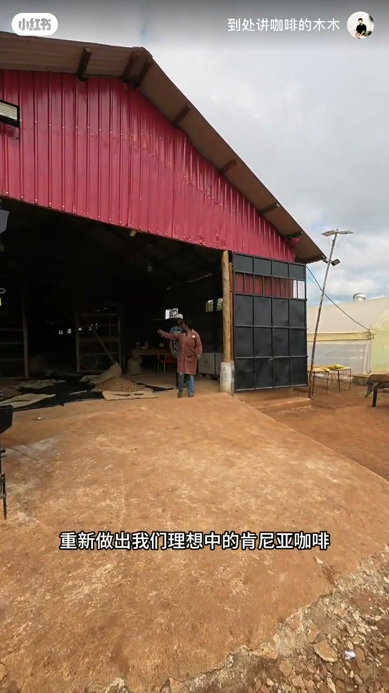

内容要点
「一个视频讲清楚为什么肯尼亚没有以前好喝！」教程要点：大家好 我是莫莫 → 今天想和大家聊一聊关于肯尼亚水洗咖啡 → 近些年经常会出现的一个不太干净 类似于草的风味 → 确实很难找到一个状态比较好的肯尼亚水洗咖啡；详见正文。
知识结构
大家好 我是莫莫
但偏向坚果掉性的群种却占了非常高的比例
我们得到了非常满意的水洗咖啡
- 大家好 我是莫莫
- 今天想和大家聊一聊关于肯尼亚水洗咖啡
- 近些年经常会出现的一个不太干净 类似于草的风味
- 确实很难找到一个状态比较好的肯尼亚水洗咖啡
- 那今天呢 就和大家谈讨一下背后的核心原因
大家好 我是莫莫
00:00–01:12大家好 我是莫莫
大家好 我是莫莫；今天想和大家聊一聊关于肯尼亚水洗咖啡；近些年经常会出现的一个不太干净 类似于草的风味；确实很难找到一个状态比较好的肯尼亚水洗咖啡；那今天呢 就和大家谈讨一下背后的核心原因；那很多人第一反应会想到种植砖的土壤变化 多种差异带来的风味波动；但实际上在常规处理工欲能稳定产出优质风味的前提下；处理环境的微生物条件才是影响当前肯尼亚水洗风味表现的核心因素；那我们团队专门在肯尼亚当地做了非常多的微生物样本的分析；中当中发现了一个很有意思的关联 就是肯尼亚当地的日常饮食几乎没有发酵类的食物；如果套用其他产区的处理方式 可能就不会得到理想的结果；我们顺着这个细节做了一个推测 会不会当地的自然发酵微生物环境本身就和其他产区有很大的区别；那后续的实验也净证了这个猜想；近些年肯尼亚当地环境里能产生明亮花火香气的柳翼群种火性很低 存活率很差


01:17–02:19但偏向坚果掉性的群种却占了非常高的比例
但偏向坚果掉性的群种却占了非常高的比例；这也是为什么很多水洗咖啡慢慢丢掉了原本标志性多层次的酸脂跟莓果掉性 转向沉闷的坚果核心原因；所以针对这个现状我们没有强行干预破坏当地的原生环境；而是在处理流程中做了系统性的精准调控；第一就是我们先对整个锤厂区做连搁的小杀；从源头避免杂菌带来的青草色；同时全程监控发酵环境的 pH 值；但这个指标呢直接对应着我们强调筛权和目标友谊群；能不能顺利的定制正常的繁殖；从底层给氛围大建安全的生长基础；第二我们在处理体系当中；人工定向的营造适合香气菌种生长的环境；帮助原本火性很低的产香性生物稳定增值；最终证实了这个定向调控方案确实是有效的


02:20–03:04我们得到了非常满意的水洗咖啡
我们得到了非常满意的水洗咖啡；当然要想最终拿到高品质的肯尼亚水洗咖啡；后续的晾晒环节同样也不能马虎；因为水洗咖啡延续了发酵的工艺；所以我们就需要严格控制咖啡豆接触紫外线的时间；把控好光照亮；把好不容易培养出的优质风味锁在咖啡豆里面；经过这一套流程的反复打；我们终于摸索出了能让肯尼亚水洗咖啡；回归往日巅峰风味的一个处理方式；重新做出我们理想中的肯尼亚咖啡；如果大家想要了解更多咖啡处理的细节；欢迎参加我们的肯尼亚的留学课程深入的交流




口述/画面要点（40段）
结合 Whisper medium 与画面大字整理；专有名词已校对。
大家好 我是莫莫
今天想和大家聊一聊关于肯尼亚水洗咖啡
近些年经常会出现的一个不太干净 类似于草的风味
确实很难找到一个状态比较好的肯尼亚水洗咖啡
那今天呢 就和大家谈讨一下背后的核心原因
那很多人第一反应会想到种植砖的土壤变化 多种差异带来的风味波动
但实际上在常规处理工欲能稳定产出优质风味的前提下
处理环境的微生物条件才是影响当前肯尼亚水洗风味表现的核心因素
那我们团队专门在肯尼亚当地做了非常多的微生物样本的分析
中当中发现了一个很有意思的关联 就是肯尼亚当地的日常饮食几乎没有发酵类的食物
如果套用其他产区的处理方式 可能就不会得到理想的结果
我们顺着这个细节做了一个推测 会不会当地的自然发酵微生物环境本身就和其他产区有很大的区别
那后续的实验也净证了这个猜想
近些年肯尼亚当地环境里能产生明亮花火香气的柳翼群种火性很低 存活率很差
但偏向坚果掉性的群种却占了非常高的比例
这也是为什么很多水洗咖啡慢慢丢掉了原本标志性多层次的酸脂跟莓果掉性 转向沉闷的坚果核心原因
所以针对这个现状我们没有强行干预破坏当地的原生环境
而是在处理流程中做了系统性的精准调控
第一就是我们先对整个锤厂区做连搁的小杀
从源头避免杂菌带来的青草色
同时全程监控发酵环境的 pH 值
但这个指标呢直接对应着我们强调筛权和目标友谊群
能不能顺利的定制正常的繁殖
从底层给氛围大建安全的生长基础
第二我们在处理体系当中
人工定向的营造适合香气菌种生长的环境
帮助原本火性很低的产香性生物稳定增值
最终证实了这个定向调控方案确实是有效的
我们得到了非常满意的水洗咖啡
当然要想最终拿到高品质的肯尼亚水洗咖啡
后续的晾晒环节同样也不能马虎
因为水洗咖啡延续了发酵的工艺
所以我们就需要严格控制咖啡豆接触紫外线的时间
把控好光照亮
把好不容易培养出的优质风味锁在咖啡豆里面
经过这一套流程的反复打
我们终于摸索出了能让肯尼亚水洗咖啡
回归往日巅峰风味的一个处理方式
重新做出我们理想中的肯尼亚咖啡
如果大家想要了解更多咖啡处理的细节